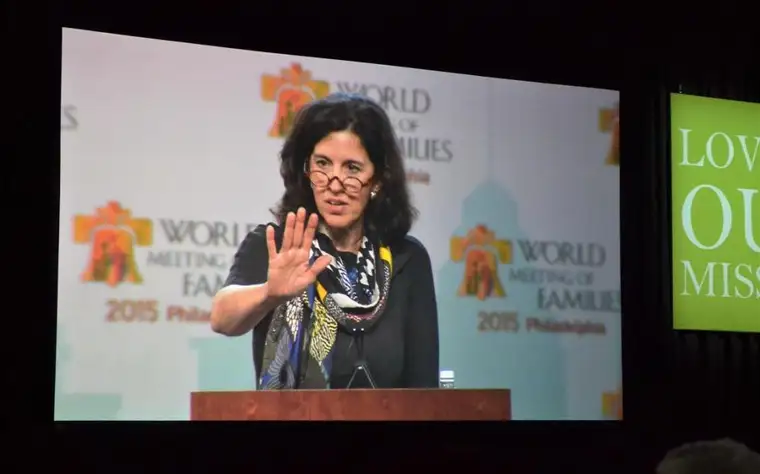

[Note: This conference, along with every gathering of more than 10 people throughout the country, has been canceled, but because of the wisdom contained within, and to continue my commitment to having a repository for my pieces, here it is a week after its run in The Forum newspaper, reprinted with permission.]

WASHINGTON, D.C. — In her expansive career as a lawyer focusing on issues concerning religious freedom and the family, Helen Alvare has influenced U.S. Supreme Court cases, decisions of the United States Catholic bishops and the Vatican.
But when she’s not filing amicus briefs shaping legal policies or advising clergy, Alvare finds life in her primary vocation — that of mother, wife and friend.
“I have a group of female friends here in D.C., and they’re all very religious — it’s how we roll, you know? And whether we’re talking about shoes, or how we shouldn’t talk about shoes too much, or ‘I need to get more serious about my prayer life,’ it’s always great,” Alvare says. “The idea that we’re women together makes a difference.”
Claiming a soft spot for North Dakota — Alvare says people here are “measurably nicer and smarter than average” — she will share her insights as keynote at the Fargo Diocese’s “Trusted Sisters” women’s conference March 27 and 28.
Along with her bird’s-eye view of today’s legal issues, Alvare will offer a Christian understanding of “what we’re really made for,” which she says is, essentially, community.
“We know how good we feel when we really connect, but we don’t always understand the amount of service and sacrifice required,” she says, explaining that life is meant to be a lot of work with some periods of rest. “We’ll be miserable if we think it’s vice versa.”
Alvare says too many Christians also equate social justice work as the end-all of their offerings, while neglecting to understand the impact of everyday relationships.
“These are part and parcel of how we live God’s love in the world,” she says. “Being a daughter or mother or sister or friend is knowing how to love like Jesus and learning how to receive like children.”
All about trust
Jennie Korsmo, who works in the area of education and formation for the diocese, says this fifth in a series of Redeemed conferences – the second for women only – is expected to cap out at 700 participants.
“Helen will open and set the national stage on family life and women’s relationship. Then, Dr. (James) Link, a psychologist from Bismarck, will talk about how we’re created in the image and likeness of God,” she says.
A third speaker, St. Paul’s Nell O’Leary, community leader and coordinator of the Blessed is She women’s ministry, will offer “practical advice on how to build up that community of faith.”
Korsmo says The Vigil Project, a group of musicians from all over the nation, will set the tone Friday night, March 27, leading the evening with “beautiful music, peacefulness, quietness and time for Adoration and to develop our relationship as daughters of God.”

Confession and Mass, led by Bishop John Folda, also will be included.
“It will be a chance to come together and worship in a way we’re accustomed to, and then building on those relationships by putting God as the center of them,” Korsmo says. “I’m excited for women to hopefully come away realizing how blessed they are as a woman, how they can be a blessing to others and to really build up women and friendships and relationships, especially as we tend to isolate ourselves more and more.”
Jennifer Anderson, owner of Redeemed Grace Counseling and part of the conference team, says she’s drawn to the theme of “Trusted Sisters,” especially since, in her work, trust is a huge issue with women.
“Many of the clients I see as a therapist struggle with trust,” Anderson says. “Many times, trust has been broken, their lives have been shattered and so often it coincides with going inward with depression or an increase in worries and anxiety.”

God did not commission the evil things that have happened on this earth, she says.
“He wept as he witnessed them… but we can trust in our heavenly father to bring us closer to his son Jesus, and know we are beloved daughters in Christ,” she says.
Continuing education credit will be offered for nurses, social workers and counselors who need them for their North Dakota licenses at no extra fee, Anderson says. She says she hopes the conference will bring women of all ages, demographics and hats together, to “learn from each other and grow and become the true authentic sisters we were meant to be.”
Ashley Grunhovd, evangelization director for the diocese, says one of the Vigil Project musicians shared with her that when women come to retreats like this, they’re often burdened with many things — whether it’s child care tasks, marriage or work. Participants will be encouraged to “lay all of those things at (God’s) feet to receive his love.”
“Our natural tendency is to serve others. When we see the needs of others, our hearts are moved,” Grunhovd says.
But often, women neglect their own needs. “It’s only when you’re able to receive love yourself, and recognize that you’re worthy of being loved, and that your value and dignity isn’t dependent on what you’re able to give others” that they can be their most authentic self and serve others well, she says.

She adds that women put too much pressure on themselves to be perfect.
“Authentic sisterhood isn’t demanding perfection from the other person,” Grunhovd says. “It’s saying, ‘We’re both a mess, but we can be there for one another, to help each other become holy,'” without “giving into the pressure of perfection.”
Alvare encourages women to come and be open to what might happen.
“I’ve met some women at conferences that have blown my mind. I remember their stories — they’ve made a difference in my life,” she says. “There’s nothing more refreshing than to stop and go do something positive like this.”
If you go
What: “Trusted Sisters” Redeemed Women’s Conference 2020
When: 5:30-9:15 p.m. March 27 and 8 a.m. to 5:30 p.m. March 28
Where: Avalon Events Center, 2525 Ninth Ave. S., Fargo
Info: $75, includes appetizers and beverage Friday night and lunch on Saturday; www.fargodiocese.org/redeemedwomen
Salonen, a wife and mother of five, works as a freelance writer and speaker in Fargo. Email her at roxanebsalonen@gmail.com, and find more of her work at Peace Garden Passage, http://roxanesalonen.com/.